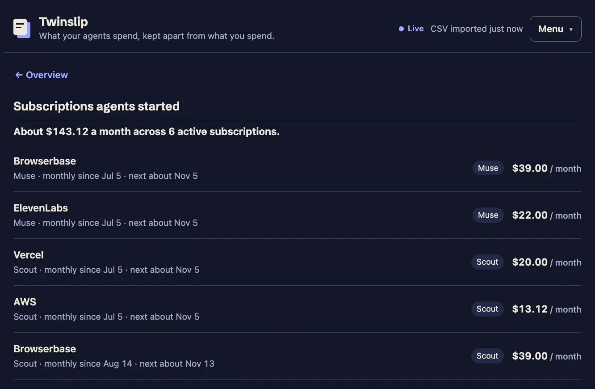
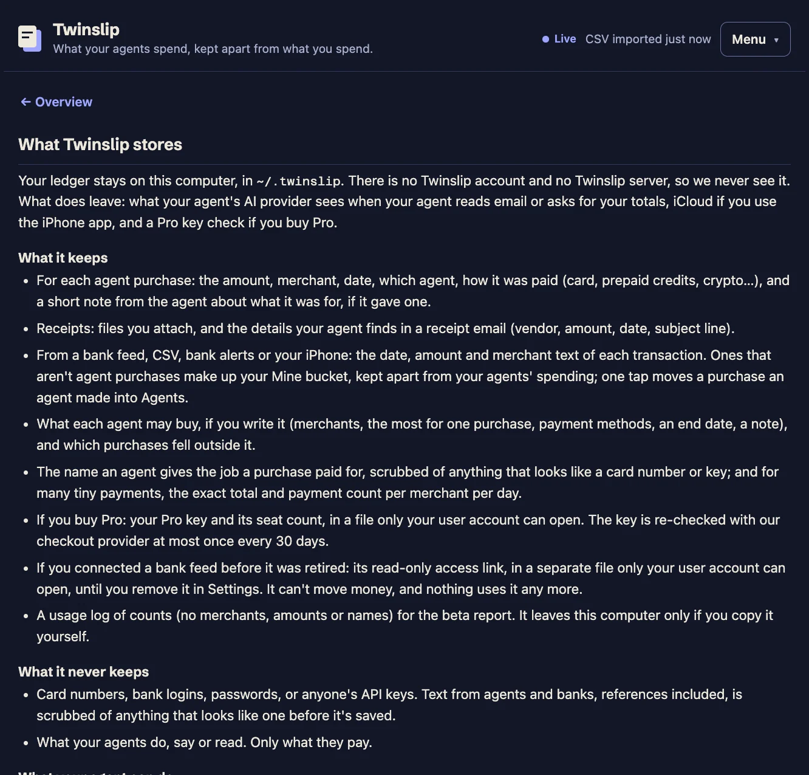
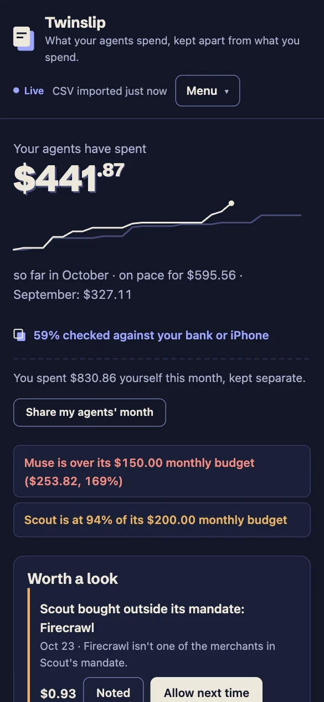

What did your agents cost you last month?
Your agents report what they spend the moment they pay. Your bank's statement file, your iPhone or a receipt you add checks it. Your ledger stays on your computer.
Free. No account. Mac beta now, iPhone app coming.
An Italian account ledger, 1819. Photo: Donatello Trisolino
One number, and everything behind it
These are real screens from the app, filled with made-up purchases from two pretend agents, Muse and Scout.





How it works
You set it up once. After that your agents do the reporting and you answer the odd question.
-
Your agent says what it paid
Right after it pays for something, like API credits, a domain or a new subscription, your agent records the amount, the merchant and the date. Card, prepaid credits or crypto all count.
-
Your bank checks its word
When your bank's statement file, your iPhone or a receipt you attach shows the same charge, it's marked verified. Until then it's flagged, so you know which numbers to trust.
-
Anything nobody claimed asks you once
A charge no agent reported waits for one tap: Mine or Agents. The app learns from your answers and suggests the likely one next time.
Your month, on one card
At the end of each month Twinslip makes you this card to share if you want to. It never shows merchants, your own spending, or your agents' names unless you switch names on.
 Twinslip
TwinslipMy agents cost me $278.11 last month.
across 2 agents · all of it checked against my bank
What did your agents cost you?
Two buckets that never mix
Your coffee and your agent's API bill don't belong in the same total. Twinslip keeps them apart, so "what did the agents cost?" has a straight answer.
Agents
$87.00- Anthropic$50.00Oct 5, MuseChecked against your bank
- OpenRouter$25.00Oct 5, MuseReported, not verified yet
- Apify$12.00Oct 4, ScoutReported, not verified yet
Mine
$75.70- Corner Grocery$61.20Oct 4From your bank
- Blue Door Coffee$14.50Oct 2From your bank
An example with made-up purchases. Try the buttons.
Verified
An agent reported it and your bank, your iPhone or a receipt you attached saw the charge too. Counted once, even when three sources saw it.
Reported, not verified yet
Only the agent has vouched for it so far, maybe with a receipt it found in your email. It counts, and it's flagged until your bank, your iPhone or a receipt you add backs it up.
Unattributed
Money left your account and nobody claimed it. One tap files it as Mine or Agents.
What it knows about you, and what it doesn't
- Amounts, merchants and dates. That's about it.
- No card numbers, no passwords, no API keys. Anything that looks like one is scrubbed before it's saved. It never sees what your agents did or said, only what they paid.
- It lives on your computer
- Your ledger is a file on your own machine. There's no Twinslip account and no Twinslip server holding a copy. Your agent's AI provider does see what your agent reads, like the totals it asks for; the privacy page lists everything that leaves.
- No bank logins, no Plaid
- Twinslip never asks for your bank password and uses no bank-connection service. Bank data comes in only if you choose to add it: a file you download from your bank's website and drop in.
- Your agent can add and read. That's all.
- It can record purchases and check totals and its budget. It can't confirm, delete or hide anything: what it adds either counts as its own spending or waits for your tap. The worst a confused agent can do is add an entry you then remove.
Free to use. Pro if you rely on it.
The tracker is free and stays free. Pro is for people who hand the numbers to an accountant, a client or a tax form.
Free
$0, for as long as you use it
- Every way in: agents, receipts, your bank's statement file
- Both buckets, the one-tap inbox, and budgets per agent
- What each agent may buy, and a flag when it buys outside that
- What each job cost, pay-per-use calls included
- Which client each job is for, and what each client hasn't been billed yet
- A heads-up when you're paying twice for the same plan
- As many agents as you like
- A clear warning when a source is out of date or failing
- The month view and basic reports
- Plain spreadsheet export, because your data is yours
- The monthly share card
Pro
$96 a seat per year, from February 2027
Pro pays for itself the first time you bill a client.
- Bill clients for your agents' costs: a statement per client with how every line was checked, your handling fee as its own line, invoice lines, and costs marked billed
- Follow-up on what needs you: missing refunds, gaps in coverage, sources that stopped checking
- Scheduled checks, notifications and a short briefing
- Tax pack: a PDF, a spreadsheet and a zip of your receipts
- Export for YNAB and Lunch Money
- Advanced search with running totals
- Alerts when spending looks unusual
- History per agent
- An audit trail when you have two seats or more
Questions
Do I need to know how to code?
No. You download a folder, double-click a file, and tell your agent "Set up Twinslip." Your agent does the rest. The download page walks through every click, including the one security prompt your Mac shows the first time.
Which agents does it work with?
Claude Code, checked end to end. Setup also connects Claude Desktop, ChatGPT and Codex, Cursor, VS Code, Gemini CLI, Zed, Windsurf and Devin Desktop if it finds them, but we haven't checked those end to end yet. Other agents and scripts can report a purchase with one command (untested so far); the page for agents and developers has the details.
What if my agent forgets to report something?
If you've added your bank's statement file, or your agent has swept your email for receipts, the charge still shows up. It lands in the inbox as unattributed and asks you once: Mine or Agents.
Could an agent hide what it spent?
No. Agents can add and read. They can't confirm, delete or hide anything: what they add either counts as their own spending or waits for your tap. A refund an agent reports waits for your tap before it lowers a total. What it can do is fail to report: a payment it never mentions, made outside your bank (prepaid credits, crypto, another card), stays unseen unless another source catches it. Card payments show up when you import your bank's statement.
Does it connect to my bank?
No. It never logs into your bank and uses no bank-connection service like Plaid. To check purchases against your bank, download the statement file (CSV) your bank's website offers and drop it in. Without it, your agents' own reports and your receipts still work.
Is it really free?
Yes. Tracking, both buckets, the inbox, budgets, what each agent may buy, the cost of each job, as many agents as you like, all your history, warnings when a source is out of date, and plain export are free and stay free. Pro adds billing your clients for those costs (a statement per client, invoice lines, costs marked billed), ongoing oversight (follow-up on missing refunds and gaps, a briefing) and the tools you need when other people rely on your numbers, like a tax pack and accounting exports.
What happens if I stop paying for Pro?
The Pro tools switch off. Your data stays exactly where it is, and the tracker keeps working like it did before you upgraded.
Does it work on Windows or iPhone?
The beta download is for Mac. An iPhone app is on the way; it will pass Wallet (Apple Pay) taps and the bank texts you set up from your phone to the Mac, rather than keep a ledger of its own.